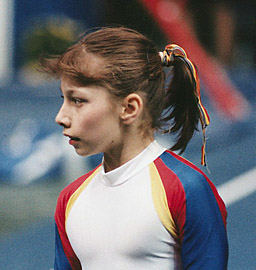

Isabela Lacatus (ROM)
1991 Cottbus AA Silver Medalist

Isabela was born on October 2, 1976 in Bucharest. Her artistic gymnastics career was a short one; she now competes in sports aerobics.
Competition Results
1989
American Cup: 9th AA (prelims)
Intl. Mixed Pairs: 10th Team
1990
Avignon International: 5th AA
Chunichi Cup: 4th AA, 4th V, 6th B
Moscow News: 25th AA, 3rd UB, 8th FX
Tokyo Cup: 3rd V, 3rd UB
1991
BEL-FRA-ROM-URS: 8th AA
Birmingham Classic: 2nd AA
Catania Cup: 3rd AA
Cottbus International: 2nd AA
GER-ROM Dual Meet: 1st Team, 3rd AA
ITA-ROM Dual Meet: 1st Team, 8th AA
Jr. European Championships: 4th AA, 4th UB, 7th V
Seiko Grand Prix: 2nd AA, 2nd V
USA-ROM Dual Meet: 6th AA
1999
European Aerobics Championships: 2nd (individual)
2000
Balkan Aerobics Championships: 2nd (mixed pairs)
2001
Aerobics World Games: 1st (individual)
2003
European Championships: 2nd (individual), 1st (mixed pairs)
World Series Final: 1st (individual), 3rd (mixed pairs)
2004
Aerobics World Championships: 3rd (individual), 3rd (mixed pairs)
2005
Aerobics World Games: 3rd (individual)
German Aerobics Open: 1st (individual)
This page was created on November
20, 2005.
© Gymn Forum